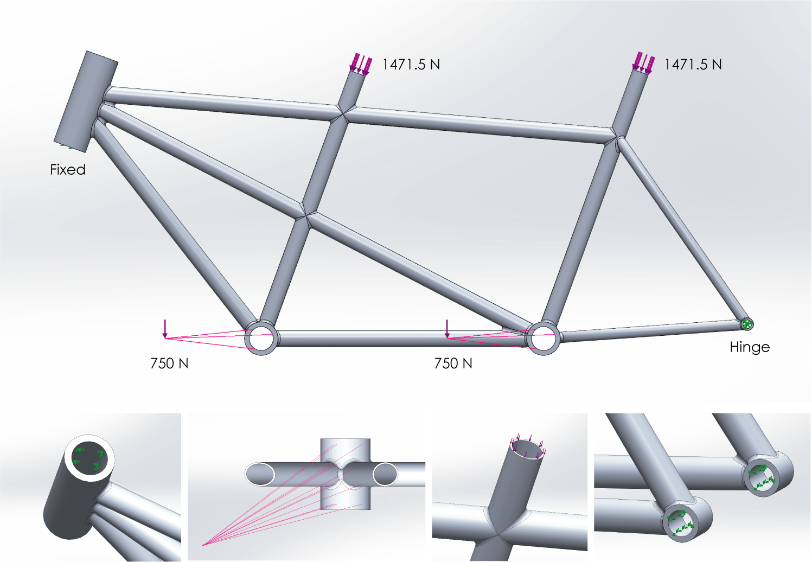
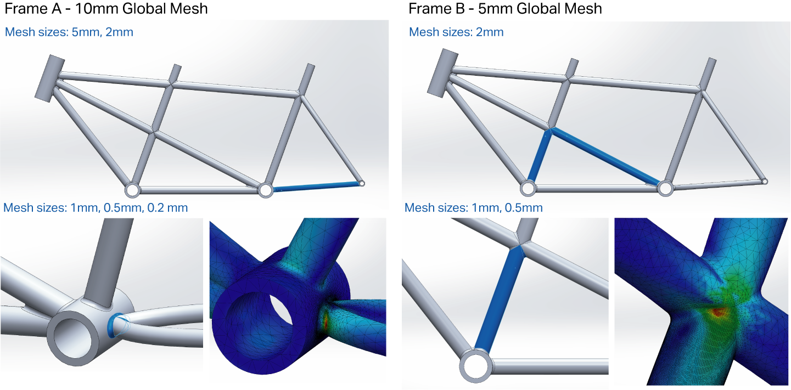
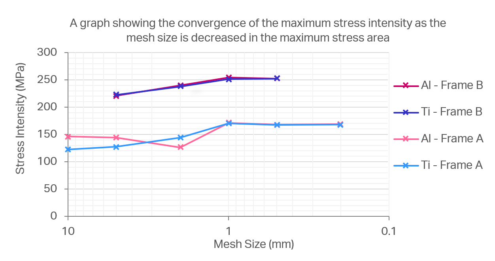

Tandem Bicycle Design
A lightweight tandem bicycle frame, designed using finite element
analysis to optimise the material and structural dimensions.
This bicycle is designed to have an expected life-span of 10 years (equivalent to 1 million loading cycles) and a natural frequency greater than 30 Hz, so as not to vibrate in a way that is uncomfortable for the users. The bicycle frame was modelled in Solidworks, and loading was applied to the seats and pedals, as shown below. The fork shell and rear wheel bearings are modelled as fixed and hinged fixtures respectively.
A mesh refinement study was performed on static loading studies, reducing the mesh size in the areas with the highest stress concentration till the stress results converged, in order to minimise the impact of discretisation on the results. The process and results are shown below. Fatigue and natural frequency studies were then run on 4 iterations (2 geometries and 2 materials), to find the lightest frame which passed the set criteria.
 